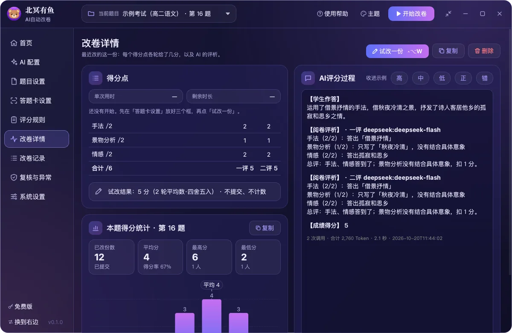
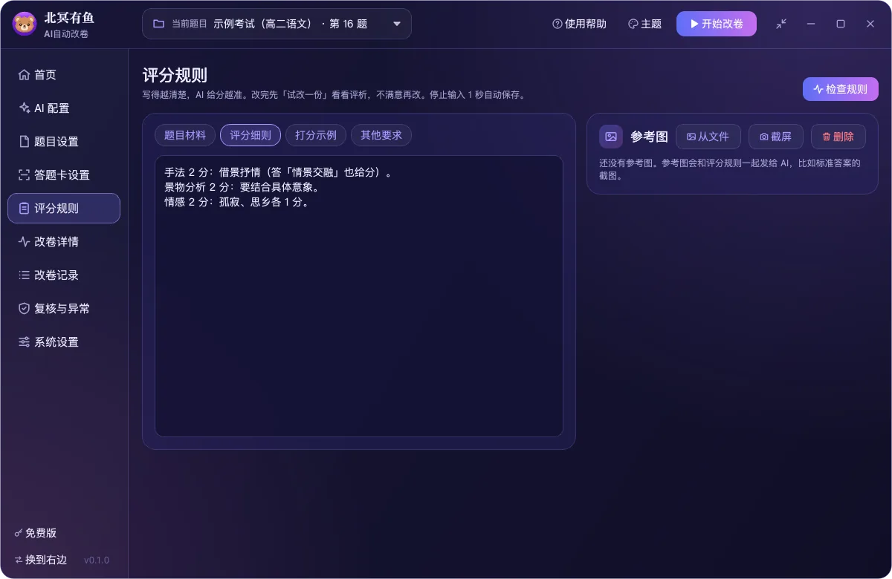
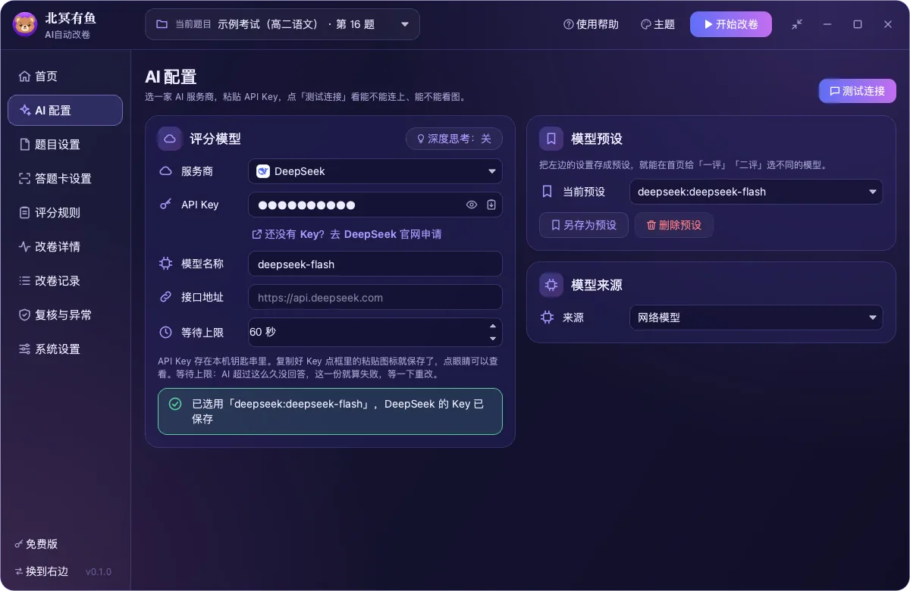

软件界面
演示数据，不含真实学生的作答。点图片看大图。









四步上手
第一次打开有新手引导。完整步骤见使用手册。
- 连接 AI
选服务商（默认 DeepSeek），粘贴自己的 API Key，点「测试连接」。
- 设置试卷、框选区域
新建题目，填满分和打分步长；在阅卷网页上把红框拖到作答、绿框拖到分数框、蓝框拖到提交按钮。
- 写规则、试改一份
粘贴评分细则；「试改一份」只填分不提交，看 AI 认的字和理由对不对。
- 开始改卷
软件一份一份地改，改够份数自己停。改卷时别动鼠标键盘。
核心能力
适用于阅卷网页上的主观题。目前在智学网上使用和测试过，其他阅卷平台还没有验证。
截图评分
截下红框里的作答，连同评分细则发给 AI，逐个得分点打分并写出理由。
一评二评
同一份默认评两次再合成，可选平均、中位、最低、最高。
替你填分、提交
模拟鼠标键盘填分、点提交；也可以只填分，你自己提交。
拿不准就停
网页没换页、AI 出错就停下说明原因；两轮分差大、认的字不一样，标黄「需复核」。
记录与统计
截图、分数、评析都留在本机，可导出 Excel，附本题得分分布。
断点续改
中途停下，下次接着改；改卷时可以收成一个置顶小窗。
下载
试用版 v0.1.2，提供免费版。安装包放在蓝奏云，不用登录、不用输密码。
使用手册
安装、权限、常见问题和更新日志都在手册里。截图和记录只存在你的电脑上，不要把学生姓名框进红框；AI 给的分数需要老师复核。问题反馈：微信 xiongmaker